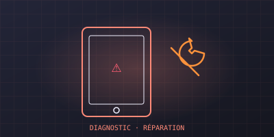
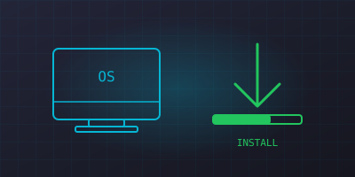
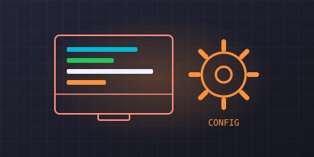

Épreuve E5 — Dossiers Techniques
L'épreuve E5 vise à évaluer la capacité du candidat à répondre aux besoins d'une organisation en concevant, déployant et maintenant des solutions d'infrastructure réseau et système.
Elle se déroule sous la forme d'une présentation orale de 30 minutes s'appuyant sur un dossier technique. Le jury évalue ma maîtrise des compétences du référentiel SISR à travers les réalisations présentées dans mon Tableau de Synthèse.
👁 Aperçu de mon Tableau de Synthèse
L'ensemble des projets et travaux pratiques réalisés en formation. Chaque document détaille la procédure, les choix techniques et les résultats obtenus.

Diagnostic des pannes, remplacement de pièces défectueuses, correction logicielle et tests avant retour client.
📄 Doc bientôt disponible
Installation et configuration du matériel et des logiciels pour les clients de l'entreprise.
📄 Doc bientôt disponible
Préparation et configuration de postes de travail : système, comptes, paramétrage et mise en service.
📄 Doc bientôt disponible